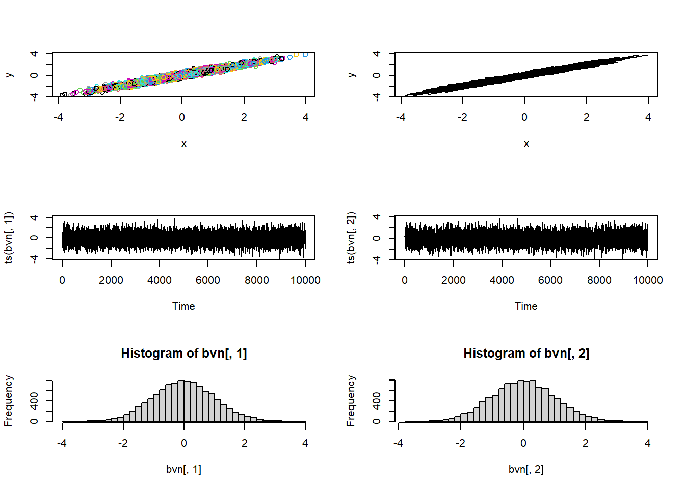
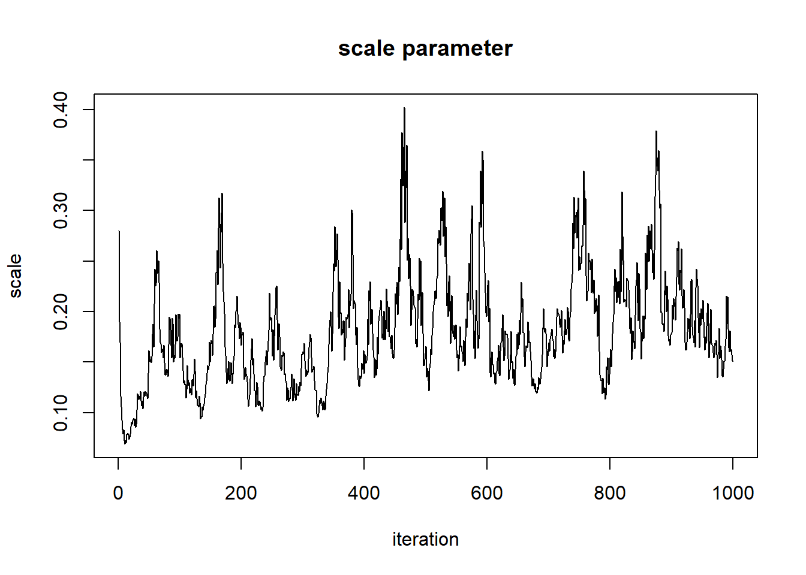

Bayesian Analysis #2: MCMC
NRES 746
October 18, 2016
Markov Chain Monte Carlo
Now in many cases, we simply won’t have the computational power to partition our parameter space into discrete pixels and completely evaluate the posterior probability for all n-dimensional pixels in that space. In these cases, we tend to harness ingenious algorithms known as Markov-Chain Monte Carlo. This approach uses stochastic jumps in parameter space to (eventually) settle on a stationary posterior distribution. The key to MCMC is the following:
The ratio of successful jump probabilities is proportional to the ratio of the posterior probabilities.
The jump probability can be characterized as:
\(Prob(jump) * Prob(accept)\)
The ratio of jump probabilities can be characterized as:
\(\frac{Prob(jump_{b\rightarrow a})\cdot Prob(accept a|b)}{Prob(jump_{a\rightarrow b})\cdot Prob(accept b|a)}\)
This ratio MUST be equal to the ratio of the posterior probabilities:
\(\frac{Posterior(A)}{Posterior(B)}\)
If this rule is met, then in the long run the chain will spend a lot of time occupying high-probability parts of parameter space. With enough jumps, the long-term distribution will match the joint posterior probability distribution.
Metropolis-Hastings algorithm
This algorithm is very similar to the simulated annealing algorithm! The main difference: the “temperature” doesn’t decrease over time and the parameter k is set to 1.
The M-H algorithm can be expressed as:
\(Prob(accept A|B) = min(1,\frac{Posterior(B)}{Posterior(A)}\cdot \frac{Prob(b\rightarrow a)}{Prob(a\rightarrow b)})\)
Note that essentially this is the same as the Metropolis simulated-annealing algorithm, with the posterior probabilities substituted for the likelihood and the k parameter set to 1
Myxomatosis revisited (again!)
library(emdbook)
MyxDat <- MyxoTiter_sum
Myx <- subset(MyxDat,grade==1)
head(Myx)## grade day titer
## 1 1 2 5.207
## 2 1 2 5.734
## 3 1 2 6.613
## 4 1 3 5.997
## 5 1 3 6.612
## 6 1 3 6.810Recall that we are modeling the distribution of measured titers (virus loads) for Australian rabbits. Bolker chose to use a Gamma distribution. Here is the empirical distribution:
hist(Myx$titer,freq=FALSE)
We need to estimate the gamma rate and shape parameters that best fit this empirical distribution. Here is one example of a Gamma fit to this distribution:
hist(Myx$titer,freq=FALSE)
curve(dgamma(x,shape=40,scale=0.15),add=T,col="red")
Recall that the 2-D (log) likelihood surface looks something like this:

Here is an implementation of the M-H algorithm to find the joint posterior distribution!
First, we need a likelihood function (our old friend!)
GammaLikelihoodFunction <- function(params){
prod(dgamma(Myx$titer,shape=params['shape'],scale=params['scale'],log=F))
}
params <- c(shape=40,scale=0.15)
params## shape scale
## 40.00 0.15GammaLikelihoodFunction(params)## [1] 2.906766e-22Then, we need a prior distribution for our parameters! Let’s assign relatively flat priors for both of our parameters. In this case, let’s assign a \(gamma(shape=0.01,scale=100)\) for the shape parameter and a \(gamma(shape=0.1,scale=10)\) distribution for the scale parameter:
GammaPriorFunction <- function(params){
prior <- c(shape=NA,scale=NA)
prior['shape'] <- dgamma(params['shape'],shape=0.001,scale=1000)
prior['scale'] <- dgamma(params['scale'],shape=0.01,scale=100)
# prior['shape'] <- dunif(params['shape'],3,100)
# prior['scale'] <- dunif(params['scale'],0.01,0.5)
return(prod(prior))
}
curve(dgamma(x,shape=0.01,scale=1000),3,100)
params <- c(shape=40,scale=0.15)
params## shape scale
## 40.00 0.15GammaPriorFunction(params)## [1] 1.502831e-06Note that we are also assuming (fairly standard assumption) that the shape and scale are independent in the prior (multiplicative probabilities for the joint prior)
Then, we need a function that can compute the ratio of posterior probabilities for any given jump in parameter space. Because we are dealing with a ratio of posterior probabilities, we do NOT need to compute the normalization constant. Without the need for a normalization constant, we just need to compute the ratio of weighted likelihoods (that is, the likelihood weighted by the prior)
PosteriorRatio <- function(oldguess,newguess){
oldLik <- max(1e-90,GammaLikelihoodFunction(oldguess))
oldPrior <- max(1e-90,GammaPriorFunction(oldguess))
newLik <- GammaLikelihoodFunction(newguess)
newPrior <- GammaPriorFunction(newguess)
return((newLik*newPrior)/(oldLik*oldPrior))
}
oldguess <- params
newguess <- c(shape=39,scale=0.15)
PosteriorRatio(oldguess,newguess)## [1] 0.01423757Then we need a function for making new guesses, or jumps in parameter space:
# function for making new guesses
newGuess <- function(oldguess){
sdshapejump <- 4
sdscalejump <- 0.07
jump <- c(shape=rnorm(1,mean=0,sd=sdshapejump),scale=rnorm(1,0,sdscalejump))
newguess <- abs(oldguess + jump)
return(newguess)
}
# set a new "guess" near to the original guess
newGuess(oldguess=params) # each time is different- this is the first optimization procedure with randomness built in## shape scale
## 38.9558275 0.1756608newGuess(oldguess=params)## shape scale
## 40.5363219 0.1557664newGuess(oldguess=params)## shape scale
## 39.50265801 0.06916286Okay, now we are ready to implement the Metropolis-Hastings MCMC algorithm:
First we need a starting point:
startingvals <- c(shape=75,scale=0.28) # starting point for the algorithmLet’s play with the different functions we have so far…
newguess <- newGuess(startingvals)
newguess## shape scale
## 72.9776409 0.2814788PosteriorRatio(startingvals,newguess) # difference in posterior ratio## [1] 0Now let’s look at the Metropolis routine:
chain.length <- 100
oldguess <- startingvals
guesses <- matrix(0,nrow=chain.length,ncol=2)
colnames(guesses) <- names(startingvals)
counter <- 1
while(counter <= chain.length){
newguess <- newGuess(oldguess)
post.rat <- PosteriorRatio(oldguess,newguess)
prob.accept <- min(1,post.rat)
rand <- runif(1)
if(rand<=prob.accept){
oldguess <- newguess
guesses[counter,] <- newguess
counter=counter+1
}
}
# visualize!
image(x=shapevec,y=scalevec,z=surface2D,zlim=c(-1000,-30),col=topo.colors(12))
contour(x=shapevec,y=scalevec,z=surface2D,levels=c(-30,-40,-80,-500),add=T)
lines(guesses,col="red")
Let’s run it for longer…
chain.length <- 1000
oldguess <- startingvals
guesses <- matrix(0,nrow=chain.length,ncol=2)
colnames(guesses) <- names(startingvals)
counter <- 1
while(counter <= chain.length){
newguess <- newGuess(oldguess)
post.rat <- PosteriorRatio(oldguess,newguess)
prob.accept <- min(1,post.rat)
rand <- runif(1)
if(rand<=prob.accept){
oldguess <- newguess
guesses[counter,] <- newguess
counter=counter+1
}
}
# visualize!
image(x=shapevec,y=scalevec,z=surface2D,zlim=c(-1000,-30),col=topo.colors(12))
contour(x=shapevec,y=scalevec,z=surface2D,levels=c(-30,-40,-80,-500),add=T)
lines(guesses,col="red")
This looks better! The search algorithm is finding the high-likelihood parts of parameter space pretty well!
Now, let’s look at the chain for the “shape” parameter
plot(1:chain.length,guesses[,'shape'],type="l",main="shape parameter",xlab="iteration",ylab="shape")
And for the scale parameter…
plot(1:chain.length,guesses[,'scale'],type="l",main="scale parameter",xlab="iteration",ylab="scale")
Can we say that these chains have converged on the posterior distribution for the shape parameter??
First of all, the beginning of the chain “remembers” the starting value, and is therefore not a stationary distribution. We need to remove the first part of the chain, called the ‘burn-in’.
burn.in <- 100
MCMCsamples <- guesses[-c(1:burn.in),]
chain.length=chain.length-burn.in
plot(1:chain.length,MCMCsamples[,'shape'],type="l",main="shape parameter",xlab="iteration",ylab="shape")
plot(1:chain.length,MCMCsamples[,'scale'],type="l",main="scale parameter",xlab="iteration",ylab="scale")
Let’s run it for even longer…
chain.length <- 10000
oldguess <- startingvals
guesses <- matrix(0,nrow=chain.length,ncol=2)
colnames(guesses) <- names(startingvals)
counter <- 1
while(counter <= chain.length){
newguess <- newGuess(oldguess)
post.rat <- PosteriorRatio(oldguess,newguess)
prob.accept <- min(1,post.rat)
rand <- runif(1)
if(rand<=prob.accept){
oldguess <- newguess
guesses[counter,] <- newguess
counter=counter+1
}
}
# visualize!
image(x=shapevec,y=scalevec,z=surface2D,zlim=c(-1000,-30),col=topo.colors(12))
contour(x=shapevec,y=scalevec,z=surface2D,levels=c(-30,-40,-80,-500),add=T)
lines(guesses,col="red")Let’s first remove the first 1000 samples as a burn-in
burn.in <- 1000
MCMCsamples <- guesses[-c(1:burn.in),]
chain.length=chain.length-burn.inNow, let’s look at the chains again
plot(1:chain.length,MCMCsamples[,'shape'],type="l",main="shape parameter",xlab="iteration",ylab="shape")
plot(1:chain.length,MCMCsamples[,'scale'],type="l",main="scale parameter",xlab="iteration",ylab="scale")
When evaluating these trace plots, we are hoping to see a “stationary distribution” that looks like white noise. This trace plot looks like it might have a little autocorrelation. One way to “fix” this is to thin the MCMC samples:
thinnedMCMC <- MCMCsamples[seq(1,chain.length,by=10),]
plot(1:nrow(thinnedMCMC),thinnedMCMC[,'shape'],type="l",main="shape parameter",xlab="iteration",ylab="shape")
plot(1:nrow(thinnedMCMC),thinnedMCMC[,'scale'],type="l",main="scale parameter",xlab="iteration",ylab="scale")
Now we can examine our posterior distribution!
plot(density(thinnedMCMC[,'scale']),main="scale parameter",xlab="scale")plot(density(thinnedMCMC[,'shape']),main="shape parameter",xlab="shape")